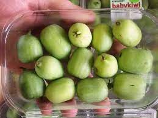

Green Kiwi
The green kiwi is the most common type.
Gold Kiwi
This variant features smooth, bronze skin and a bright, gold-colored flesh inside.
Red Kiwi
Red kiwi is rare and has a smooth, bronze exterior similar to the gold kiwi.

Baby Kiwi
Smaller than regular kiwis, baby kiwis are the size of grapes with smooth, edible skin.

Arctic Kiwi
Smaller than the common kiwi, the Arctic kiwi is about the size of a grape.

Silver Kiwi
This is a species of kiwi that is native to East Asia. It has small, silver or white fruit.
Potassium
Kiwi fruits contain about as much potassium as bananas.
Originated
The kiwifruit originated from China.